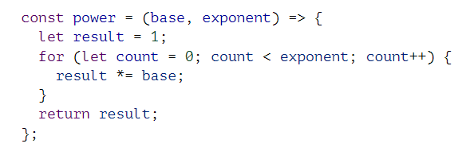

Basics of functions, statements, expressions. basic blocks of any standard code. expressions end in semi colons (;). basically similar to the consruction of any writing containing words, sentences pharagraphs, ect.. All these going into the overall 'story'
loops - a way of separating an operation especially if it needs to be perfomed more than once.
how you format a document is important for seeing where the flow of that document is and the components of a specific operation (usefull for seeing what are implements of a loop and what the loop is).
Functions - scopes and bidings - see below code
if(true){
let y = 20;
var z = 30;
}
Y and Z are only visible (and accessable) within the if expression. AKA Y and Z are only availible within
that 'scope.'
Arrow Fucntions =>
example:

\
this is another notation for functions with only one upside (says they will go over it later). Probably
won't be using too many of these (at least as far as i can think)
recursion - AKA if/else statements
Objects and Arrays - lists of data. each form has its advantages.
Arrays are strings of data.